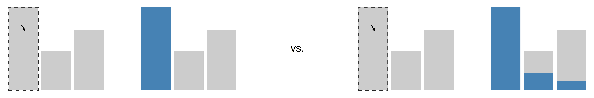
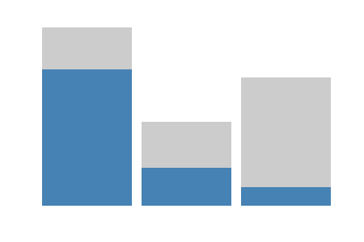

The Fabric of Interactive Graphics
Interaction vs. modularity
- “Classical” IDV systems: deep interactivity but less flexible
- Modern GoG-based IDV systems: highly customizable but usually only shallow interactive features out-of-the-box
- Nominal vs. composition-based approach to graphics:
- Scatterplot vs.
- Plot with continuous x- and y- encodings and point geometry
Why is it challenging to combine the GoG modularity with interactivivity?
Graphics and structure
- A plot is not just a picture - instead, it is a graphical representation of structured information
Plots as maps
- A plot is a map (function) from data to a graphical display (represented on computer screen/paper):
\[\text{Data} \to \text{Graphics}\]
- Can this map be any old function?
- Plots “in the wild” exhibit a number of regular properties/features
- Many in static plots, interactivity adds additional constraints
Plots as partitions
- Useful to think about plots as partitions:
- A surjective collection of disjoint (and non-empty) subsets
- = Each point, bar, or line represents a distinct set of cases/rows, and together the objects cover the whole data space (bijection)
\[\text{Data subsets} \to \text{Geometric objects}\]
- Some exceptions:
- 2D KDE plots (multiple isopleths map to same datapoints)
- Graphical deficiencies (e.g. overplotting)
Plots as partitions and interactivity
- The (bijective) partition model is useful in interactive graphics
- Provides unambiguous visual mapping in linked selection:
- If I click a bar in a plot, only that bar gets highlighted
(not the case with non-disjoint data subsets)

- Also useful for querying: geom/subset information is independent
Plots, summaries, and aesthetics
- We rarely plot raw data - instead, we often summarize/aggregate
- Also, we encode the summaries into aesthetics
(via scales/coordinate systems)
- Therefore, the full mapping is a composition of several maps:
\[\text{Data subsets} \to \text{Summaries} \to \text{Aesthetics} \to \text{Geometric objects}\]
- The domains/codomains often have structure which the maps may or may not preserve
Example: Stacking 1
- The data partition can have a hierarchical structure
- Data subsets are made up of smaller data subsets
- Example: stacked barplot made up of segments
- To be a valid representation, the visualization map (plot) should preserve this structure
- I.e. aggregation and encoding also need to be structure-preserving
Example: Stacking 2
\[\qquad \text{Bar subset} = \text{Gray subset} \cup \text{Blue subset}\]
\[\qquad \text{Bar} = \text{Stack}(\text{Gray segment}, \text{Blue segment})\]

Example: Stacking 3
- However, the mapping should preserve salient visual properties
- E.g. bar height:
\[\text{Height(Bar)} = \text{Height(Stack(Blue segment, Red segment))}\]
- However, this is not always the case
- Stacking sums is fine, stacking other is meaningless
Structure-preserving maps: Functors
- In category theory, structure-preserving maps are known as functors
- Specifically, functors preserve function composition:
\[F(f ; g) = F(f) ; F(g)\]
Functors and visualization
\[F(f ; g) = F(f) ; F(g)\]
- In our case, we can think of \(f\) and \(g\) as taking a union with some fixed set, e.g. \(f(x) = x \cup A\) and \(g(x) = x \cup B\) (where \(x\) can be \(\varnothing\))
- \(F\) can be the aggregation and encoding maps
- When both aggregation and encoding are functors, then the whole visualization map (plot) is a functor as well (functors compose):
\[G(F(f ; g)) = G(F(f)) ; G(F(g))\]
Reasoning about graphics
- Practically, functors allow us to reason about composition of summary statistics and graphics
- For instance, sums and maximums compose:
- \(\text{sum}(A \cup B \cup C) = \text{sum}(A) + \text{sum}(B) + \text{sum}(C)\)
- \(\text{max}(A \cup B \cup C) = \text{max}(\{\text{max}(A), \text{max}(B), \text{max}(C)\})\)
- However, e.g. means do not:
- \(\text{mean}(A \cup B \cup C) \neq \text{mean}(\{\text{mean}(A), \text{mean}(B), \text{mean}(C)\})\)
Preserving properties
- However, perhaps we want plots to be more than just any function
- Maps can preserve or fail to preserve certain properties
- If partition is the fundamental model, then the mapping (plot) should preserve the properties of sets and set operations
- Statistics and graphics should behave like sets
Set union and associativity
- One fundamental thing we can do with sets is to merge them (union)
- Set union has several important properties, including associativity:
\[A \cup (B \cup C) = (A \cup B) \cup C = A \cup B \cup C\]
- “If we gather up the stuff contained in several sets, we end up with the same result regardless of what order we do it in”
Preserving set union
- If we want to interpret the geometric objects in our plots as sets, they need to preserve associativity
- To do this, not just the geometric objects but also the underlying summaries need to be associative
- Counterexample: stacking